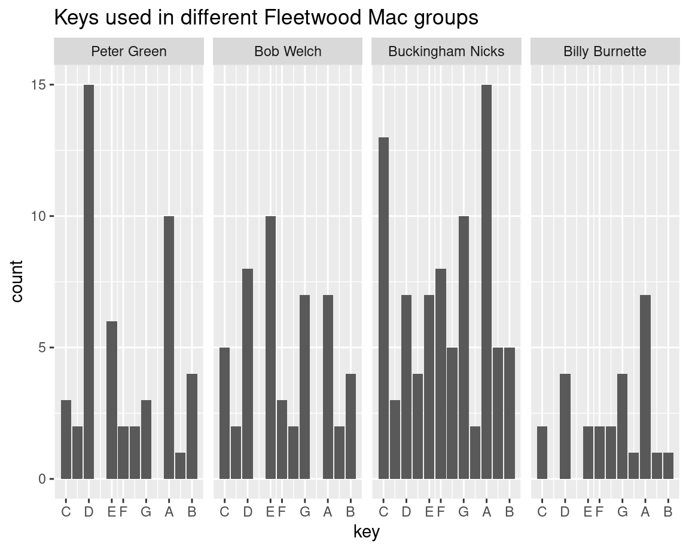
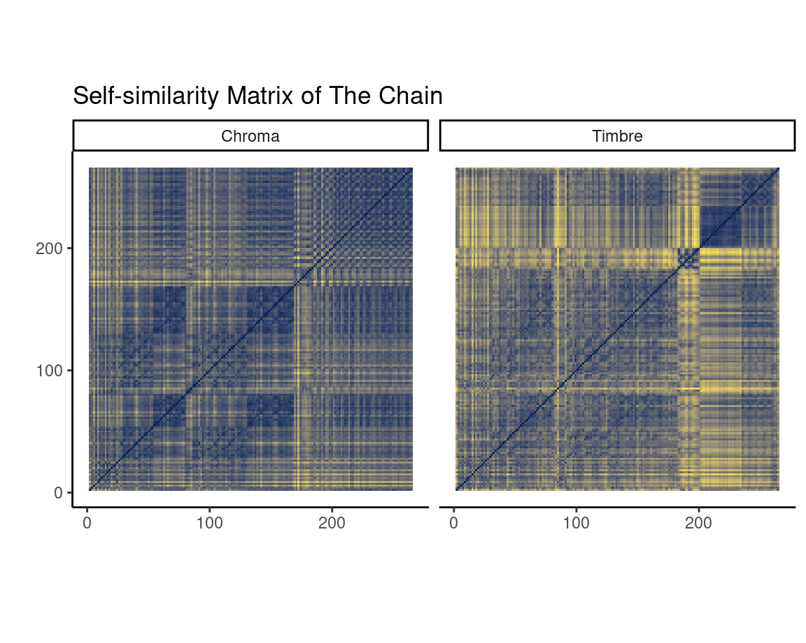

In this section I will discuss the keys that are used in each line-up.
Peter Greens Fleetwood Mac has two keys, key 2 and key 9, that are used a lot more than the others. Key 2 is also used quite a bit in the Bob Welch era, but is not the most used key. During the Buckingham Nicks and the Billy Burnette line-up key 2 is still used, but it is one of the lesser used keys. Key 9, however, did get used the most in these line-ups, but in the Bob Welch line-up this key is was only moderately popular.
The most used key in the Bob Welch line-up is key 5, which was the 3rd most used key in the previous line-up. In the final two line-ups this key was used, but it does not stand out.
During the Buckingham Nicks era key 0 got used a lot, while in the other line-ups this key was barely used.

I have chosen the song The Chain for the self-similarity matrix, because there is a two distinct sections in the song. The first section consists of the main verse and the chorus and the second sections is the outro of the song.
The Chain is also the only song in the Buckingham Nicks era which is written by all band members.
In the first section of the song there is a checkerboard pattern visible in the chromagram.
The change between the first section and the second section starts around the three minute mark, when all instruments go silent, except for the drums. This can be seen in both matrices, because there is a straight horizontal and vertical line.
Then the outro starts with an iconic bass section and after 20 seconds a guitar solo accompanies the drums and the bass. When the vocals start in the final part of the outro, you can see a clear shift in timbre in the final section.
My corpus consists of the 17 studio albums released by the band Fleetwood Mac. Also known in the earlier years as Peter Greens Fleetwood Mac. I choose this corpus, because Fleetwood Mac is my favorite musical artist and the band has topped my Spotify wrapped ever since I got a Spotify subscription a few years ago. I think this corpus will be interesting, because there have been a lot of changes to the bands line-up, especially in their earlier years. Below is a list of the albums and the changes of the band members (and their primary instruments) that helped create the album. Only two band members, Mick Fleetwood (drums) and John McVie (bass), have been in the band since the start and have performed on every album. Which is why their names are not included in the list.
+ Peter Green (guitar/ lead and backing vocals), Jeremy Spencer (slide guitar/ piano /lead and backing vocals), - Fleetwood Mac (1968) (Also known as Peter Greens Fleetwood Mac)
+ Danny Kirwan (guitar/ lead and backing vocals)
- Peter Green
- Jeremy Spencer + Bob Welch (guitar/ lead and backing vocals), Christine McVie (keyboards/ lead and backing vocals)
Future Games (1971)
Bare Trees (1972)
- Danny Kirwan + Bob Weston (lead guitar/ backing vocals), Dave Walker (lead and backing vocals/ harmonica)
- Dave Walker
- Bob Weston
- Bob Welch + Lindsey Buckingham (guitar/ lead and backing vocals), Stevie Nicks (lead and backing vocals/ tambourine)
Fleetwood Mac (1975) (Also known as The White Album)
Rumours (1977)
Tusk (1979)
Mirage (1982)
Tango in the Night (1987)
- Lindsey Buckingham + Billy Burnette (rhythm guitar/ backing and lead vocals), Rick Vito (lead guitar/ backing and lead vocals)
- Stevie Nicks, Rick Vito + Bekka Bramlett (lead and backing vocals), Dave Mason (lead guitar/ backing and lead vocals)
- Billy Burnette, Bekka Bramlett, Dave Mason, Christine McVie + Lindsey Buckingham, Stevie Nicks
The band started out as a blues band, but since the addition of Christine McVie after the album Kiln House the style of the band shifted to rock. I expect there to be quite a few differences between these earlier albums and the others. Their second self-titled album was the breakthrough for the band and got them global success. This was the first album released since the addition of the duo Lindsey Buckingham and Stevie Nicks. The members of the band that released this album is the most well known line-up and brought the band the most success in the 5 albums they released as a core. It will be interesting to look at what this line-up did different, that brought them this success.
To make it easier for comparing these different line-ups I will group them as follows: Peter Greens Fleetwood Mac (Fleetwood Mac I - Kiln House), Bob Welchs Fleetwood Mac (Future Gamse - Heroes Are Hard to Find), Buckingham Nicks Fleetwood Mac (Fleetwood Mac II - Tango in the Night, and Say You Will) and finally Billy Burnettes Fleetwood Mac (Behind the Mask and Time).
image
This plot shows the valence versus the energy of each track on each album. The popularity of the track is given by the size of the dot and the colour represents if the song is in a minor or major key.
Tracks with high valence sound more positive, while tracks with low valence sound more negative. The energy of a track represents a perceptual measure of intensity and activity.
Every album since Mirage sounds more positive, while albums before that had a more spread out valence.
The album Rumours is the most popular albums, having a lot of high energy songs and a spread out valence. But just having high energy songs is not enough to make an album popular, this can be seen on the albums Bare Trees and Penguin.
Studio version acoustic guitar with electric guitar solo
Live 1975 version electric guitar solo replaced by piano solo
Live 1997 version adjusted guitar solo that is played by acoustic guitar. making the entire song played only by an acoustic guitar
not sure why the second one is smaller